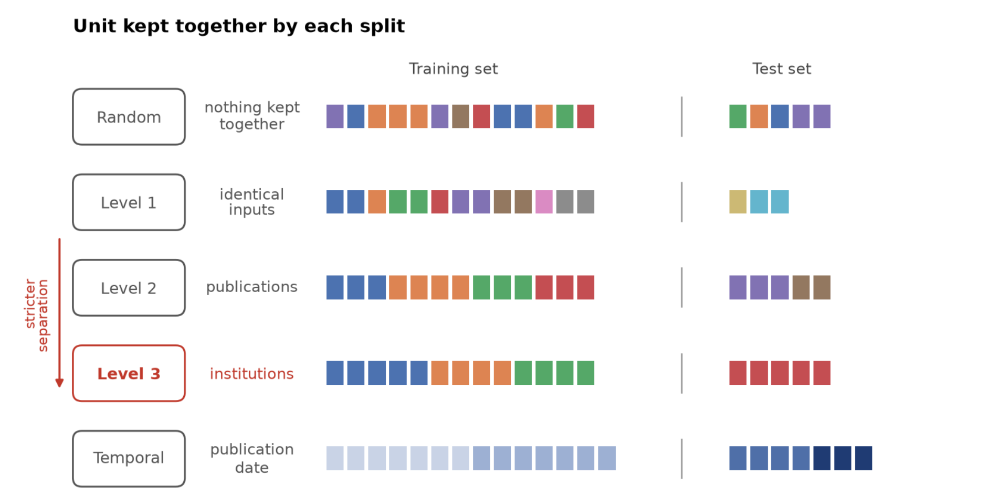
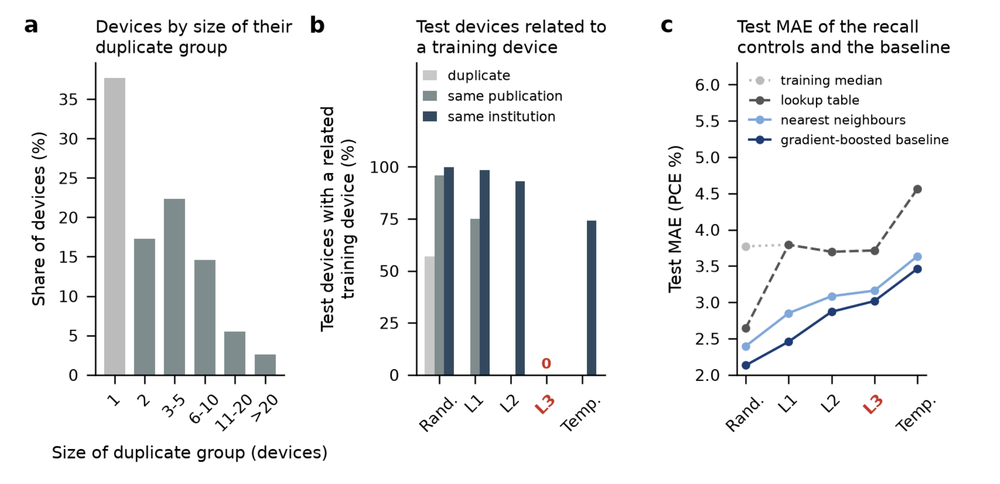
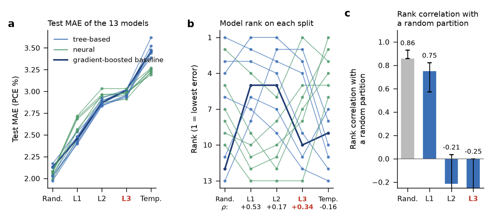
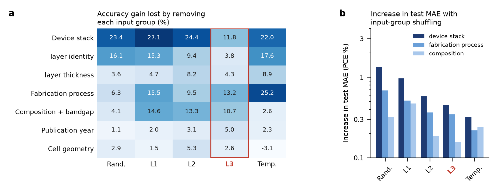

按来源分组评价钙钛矿机器学习：区分历史配方记忆与新器件泛化
论文原文 ↗Qiwei Han、Chi Zhou，Provenance-grouped protocol for evaluating machine learning in perovskite photovoltaics，arXiv，2026。官方页面｜原始 PDF
钙钛矿太阳能电池数据库汇集了大量配方、工艺和效率记录，同一论文常包含一批按相同配方制成的器件。随机抽取测试集时，同配方器件容易同时进入训练和测试，模型只需回忆这类记录的典型效率，就能得到较好成绩。
本文将数据接回配方、论文和机构来源，建立逐级隔离的评估协议，并加入按年份向前预测的测试。13 个模型在同样的数据划分上比较后，作者发现：随机划分擅长识别熟悉配方的模型，与面对新机构和后续年份表现较好的模型，会出现明显的排名变化。
方法怎样做：重建器件来源，再形成不同层级的泛化任务
作者从 Perovskite Database 的 42,443 条记录清洗得到 23,620 个器件，整理为 24 个描述字段，包括吸收层组成与带隙、传输层及电极、层厚、沉积和退火、测量条件及发表日期。预测目标为 PCE，即光电转换效率。
24 个字段相同的器件归入同一个重复描述组，它们可以是分别制造、效率不同的电池。同一 DOI 对应的器件组成论文组；作者再通过 OpenAlex 查询通讯作者单位，为论文建立机构来源，覆盖清洗后 95.8% 的器件。

原图 1｜随机划分逐个分配器件，第 1–3 级依次将相同描述、整篇论文、整个机构保留在同一侧；时间划分按发表年份分开。
这形成五种任务：随机划分；第 1 级的描述分组；第 2 级的论文分组；第 3 级的机构分组；以及训练至 2016 年、2017 年验证、2018 年起测试的时间划分。论文和机构标识用于构造数据集，模型输入仍是器件本身的描述。不同层级分别检验新描述、新论文、新机构和未来记录的预测。
模型包含六种树方法、六种神经方法和固定提升树基线。多数树模型把传输层等整段文本作为类别，用训练内的平均效率和计数编码；神经模型还可接收组成权重，两种文本模型用冻结的 SciBERT 将科学名称编码成向量，再用预测头学习效率。所有模型使用相同测试器件，配置由验证集选择。
两个简单对照量出记忆能提供多少分数。查表法寻找训练中完全相同的描述，返回其效率中位数；没有匹配时返回训练总体中位数。近邻法寻找最相似的训练器件，平均其效率。最终用平均绝对误差 MAE 评价预测：误差为 2，表示平均相差两个效率百分点。
主要结果：隔离来源改变评估，也改变模型选择
大量同描述器件让随机划分奖励记忆
23,620 个器件只有 12,933 种描述，62.3% 至少有一个描述相同的伙伴。随机划分中，56.9% 的测试器件在训练中有相同描述，95.8% 共享论文，99.8% 共享机构。描述分组后仍有 74.9% 共享论文；论文分组后仍有 93.0% 共享机构。逐级分组因而依次关闭不同来源的关联。

原图 2｜a 为重复描述组大小，b 为测试与训练的来源关系，c 比较查表、近邻、训练中位数及提升树的误差。
查表法在随机划分的 MAE 为 2.643，描述分组后变为 3.793，与直接返回训练中位数相同。在按早先模型评估说明重建的设置中，查表结果为 2.934，接近该研究报告的 2.936，直观显示历史记录记忆的贡献。
作者进一步固定测试器件和训练集大小，移除跨集合相同描述，再改变训练中是否出现同论文或同机构的其他器件。允许同论文记录进入训练，MAE 平均下降 0.215 个百分点；同机构、不同论文的记录带来 0.106 个百分点优势。来源关联因此在配方完全相同之外仍有可测量贡献。
树模型擅长熟悉配方，神经模型在后续年份更有优势
共同基准中，随机划分最优的 LightGBM MAE 为 1.973；第 1、2 级最优的 XGBoost 分别为 2.396、2.832。新机构测试中，SciBERT 加注意力聚合的点估计最低，为 2.912，CatBoost 为 2.933。模型排序随泛化任务改变。

原图 3｜a 展示 13 模型的误差，b 展示排名转移；c 比较树方法及固定基线在重复划分中的排名相关。随机划分的排序在新论文、新机构上发生显著变化。
时间测试的组间差别更明显：六种神经模型的 MAE 为 3.192–3.268，六种树模型为 3.388–3.621；将年份边界向后推一年，也保持神经组领先。后续测试年份的平均效率从训练期的 10.54% 升到 13.59%，树方法系统性低估，神经方法则更好跟随整体上升。
这个结果与模型预测方式联系起来：树集成通过训练样本所在叶节点的结果组合预测，擅长识别熟悉类别；神经模型可以学习延伸到更高数值的映射。文本表示同时将材料名称中的信息接到新命名和新层组合。作者由此揭示了评估任务改变时，适合的架构也随之变化。
制备工艺、器件层叠和吸收层组成都保留重要预测信息
作者依次移除输入组并重新训练，比较误差增加；也在固定模型后打乱测试输入，观察模型依赖。新机构测试中，移除制备工艺、层叠结构、组成与带隙，MAE 分别增加约 0.091、0.082、0.074 个百分点，显示三类信息具有相近量级的预测价值。
层名称单独移除的损失，从随机划分的 0.236 降到机构划分的 0.026，而组成和工艺保持较稳定贡献。层名称组合因此既含器件信息，也能标记来源和惯用配方；隔离来源后，工艺、结构和组成之间的共同作用更清楚。

原图 4｜a 展示移除输入组损失的准确率收益，b 展示打乱一组输入后的误差增加。两种比较分别观察信息贡献与训练后依赖。
对领域的贡献
本文将数据来源关系变成可执行的评估协议：重复描述、论文、机构和时间分别构成泛化层级，简单查表对照量出记忆贡献，共同划分让不同模型能够直接比较。
这一协议把模型开发的目标从随机测试上的高分，推进到新器件、新机构和未来记录上的预测能力。同时，特征分析将吸收层化学、器件架构与制备方法放在一起，支持围绕完整器件共同设计模型输入与实验变量。
原始摘要完整译文
用于钙钛矿太阳能电池的机器学习模型通常采用随机数据划分进行评估，而我们表明，大量内部重复会使这种做法系统性地产生信息泄漏。由于清洗后近三分之二的器件与另一器件具有完全相同的配方，随机划分主要奖励对历史数据的简单记忆，而非检验真正的物理泛化。为解决这一问题，我们映射了 Perovskite Database 的机构来源，并建立严格的分组划分层级，逐步隔离重复器件、论文和机构。对十三种模型的基准测试在所有划分上建立了新的最先进性能，并揭示出一个关键的模式转变：树集成通过识别熟悉配方，在随机划分上占优；但面对真正未见的机构和未来发现时，它们的排名崩塌，而能够感知组成的神经架构表现突出。此外，特征重要性表明，器件架构与制造方法对最终效率的决定作用，与吸收层化学同样强。这套标准化协议使研究共同体能够把记忆与真正的物理发现区分开来。